Кул'ТирасДрустварЦарство мучений
Кэтрин Праудмур находит Джайну в Царстве мучений...
- Наконец-то.
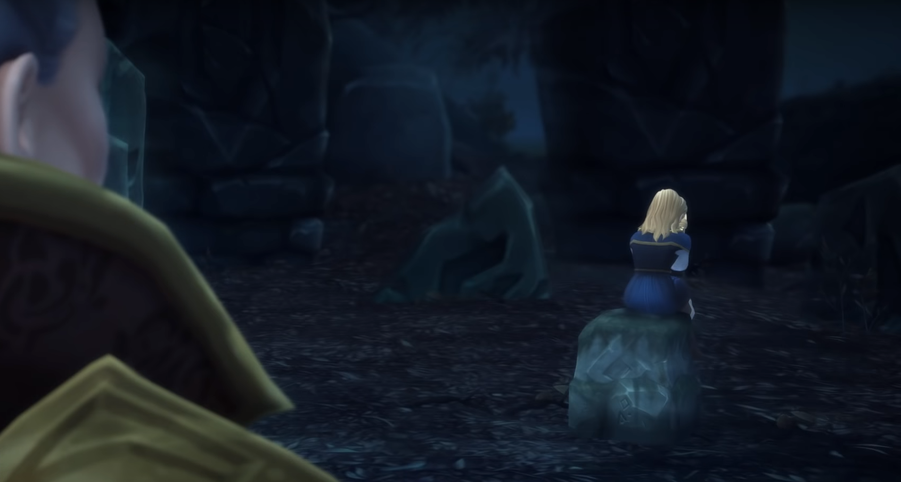
Маленькая Джайна плачет и шепчет:
- Это я во всём виновата...
Кэтрин пытается дотронуться до своей дочери, но она пропадает, а саму Кэтрин окутывает тьма.
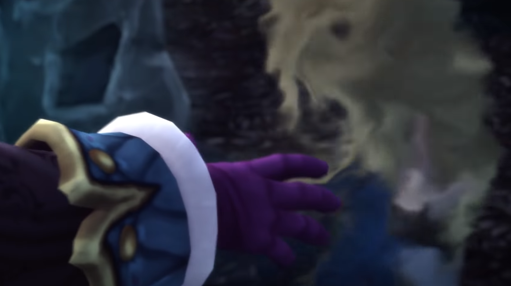
Вспышка света...-Мы опоздали... Весь город должен быть очищен.
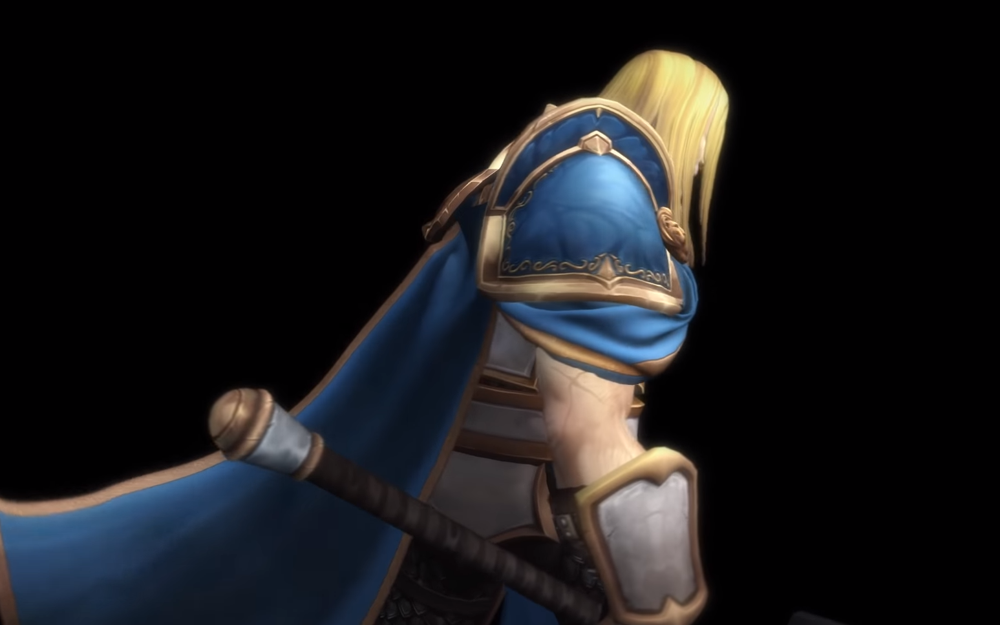
Артас оборачиватся и произносит:
-Джайна...
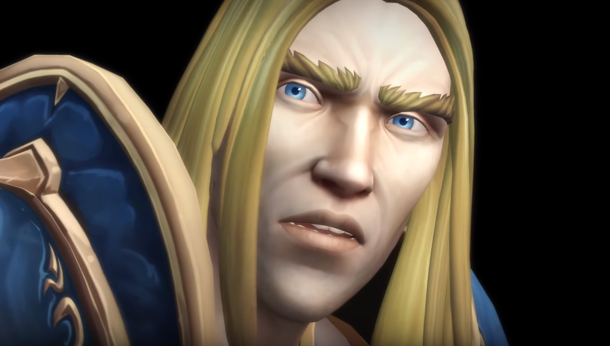
-Прости меня, Артас. Я не могу на это смотреть.
Джайна разворачиватся и уходит во тьму.
Голос мыслей Джайны разносится в голове у Кэтрин:
- Можно было вмешаться... Он бы не стал... Он был бы жив...Вспышка света ...- Меня поражает твоя наивность, Джайна.
Кэтрин, услышав голос мужчины:
- Дэйлин?
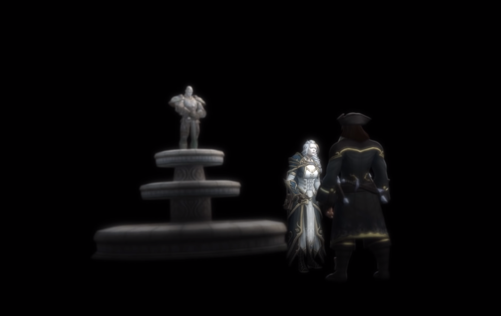
- Прошу остановись, отец! ...Я должна была убедить его... Ты не понимаешь!- Я понимаю больше чем тебе кажется, дитя. ...Я была слабой... Может со временем и ты поймёшь...
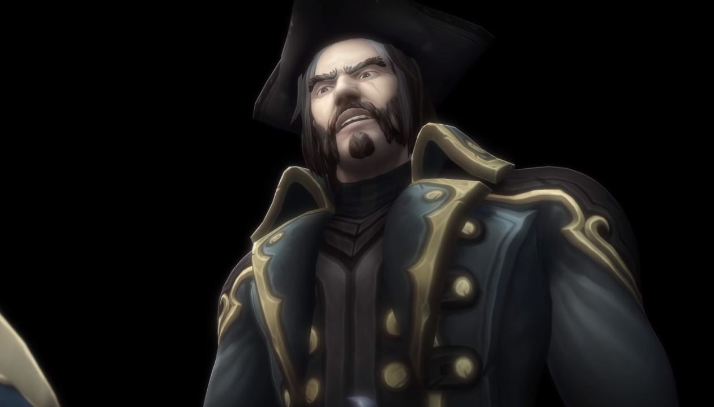
Дэйлин разворачивается и уходит, крикнув:
- Взять их!...Застравить его понять...-Отец, нет! ...Прости меня...
Кэтрин, видя это, произносит:
- Его злейшим врагом был он сам. ...Надо было объяснить...- Ты правда думаешь, что от вины можно так легко избавиться!
Голос Дэйлина эхом звучит в голове Кэтрин. Она хватается за голову и кричит.
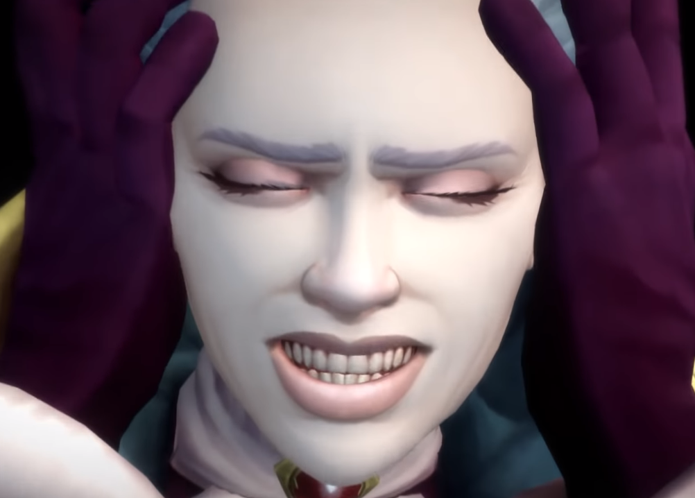
Вспышка света ...
Джана сидит над трупом своего отца, плачет, и придерживая его плечи, всхлипывает:
- Отец... Почему ты не послушал меня?..
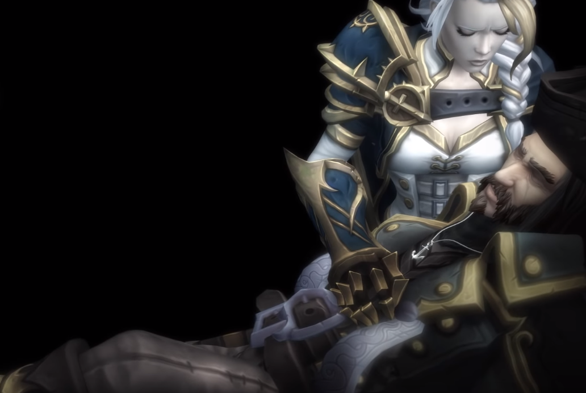
Вспышка света ...
Кэтрин видит саму себя и Присциллу Эшвейн в момент приезда Джайны в Боралус.
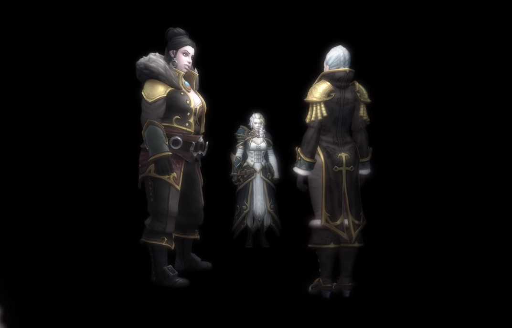
Присцилла обращается к Кэтрин:
- Кэтрин, закон есть закон. Наказание за измену - смерть...- Ты принимаешь приговор своей родины?
Кэтрин видит, как она и другие призраки сомнений Джайны стоят вокруг неё.
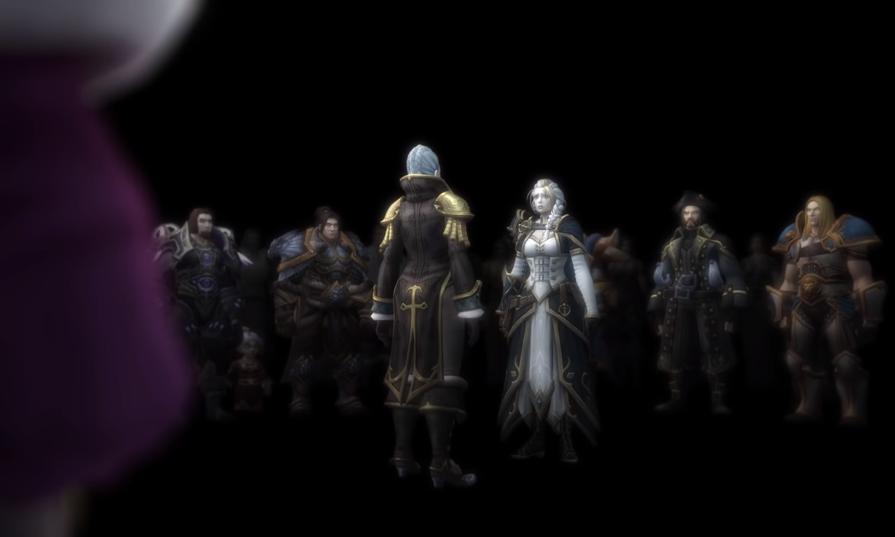
- Я приму твой приговор, мама...
Кэтрин подходит к Джайне и взмахом руки рассеивает свой призрак.
- Дочь моя... Прости меня. Прости отца, и прости... саму себя.
Призраки рассеиваются, последним рассеивается призрак Дэйлина.
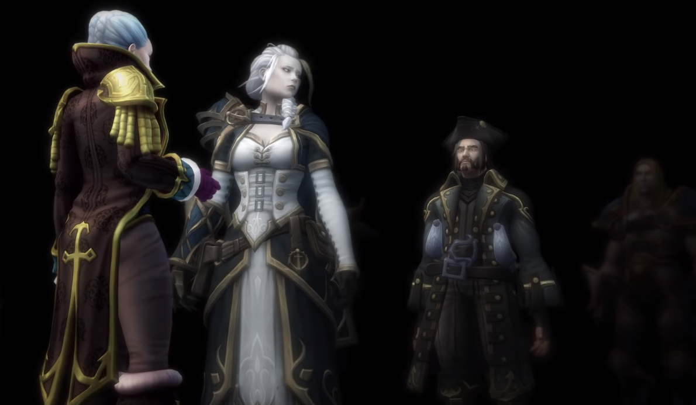
Уже голос Кэтрин звучит в голове у Джайны:
...Поднимайся,милая...Вспышка света ...
Мать и дочь обнимаются.